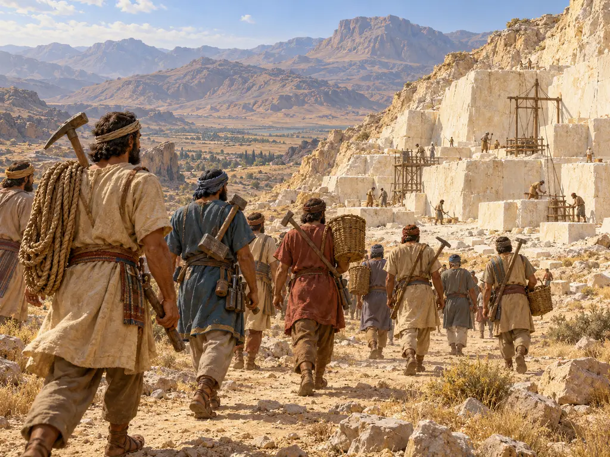
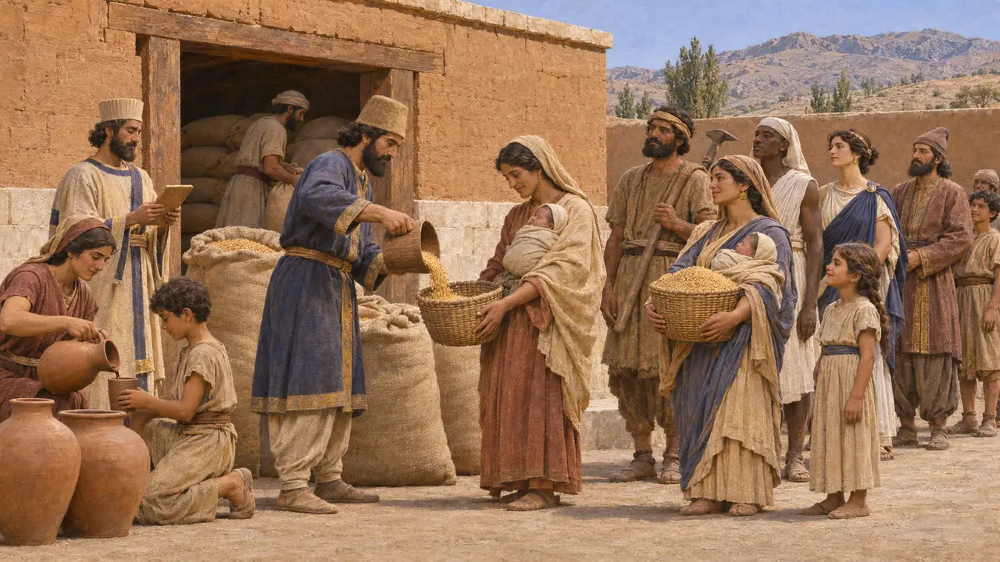
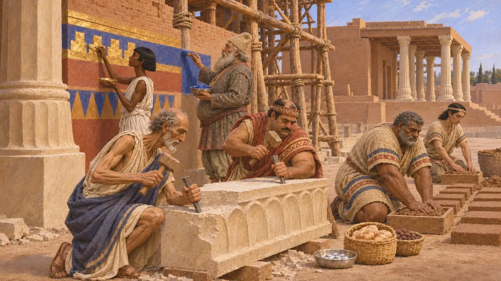
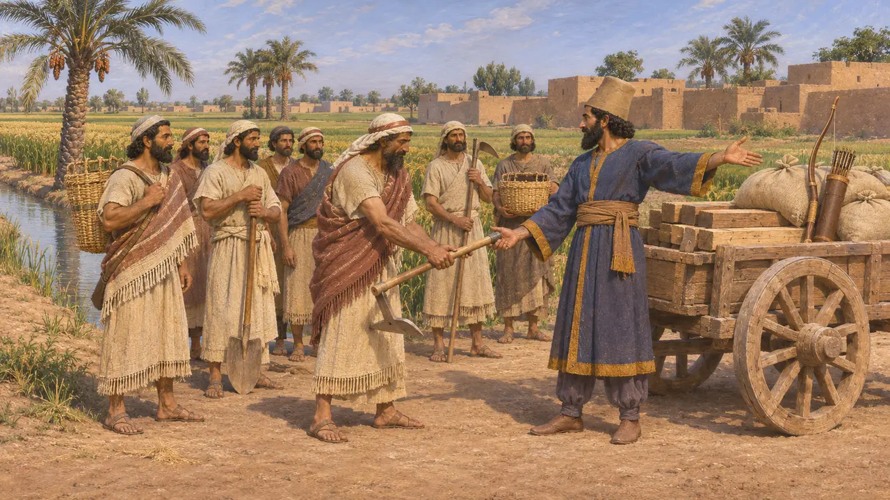
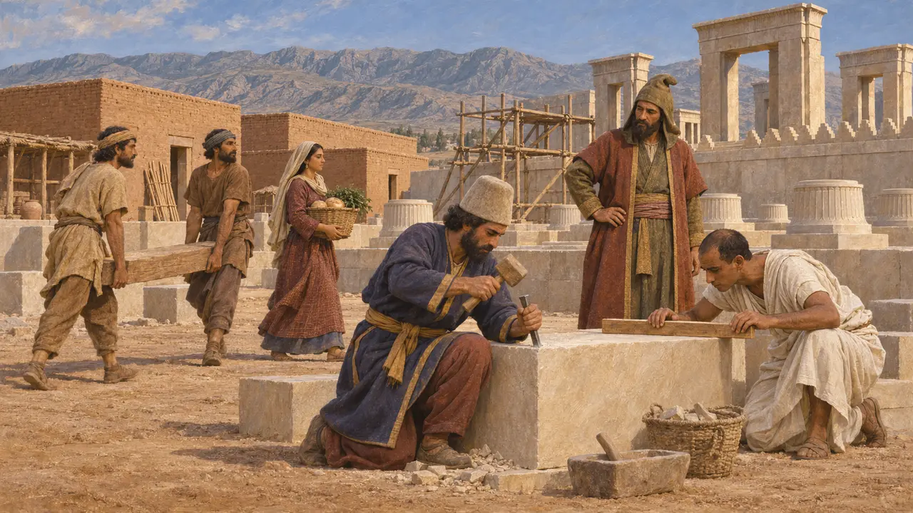
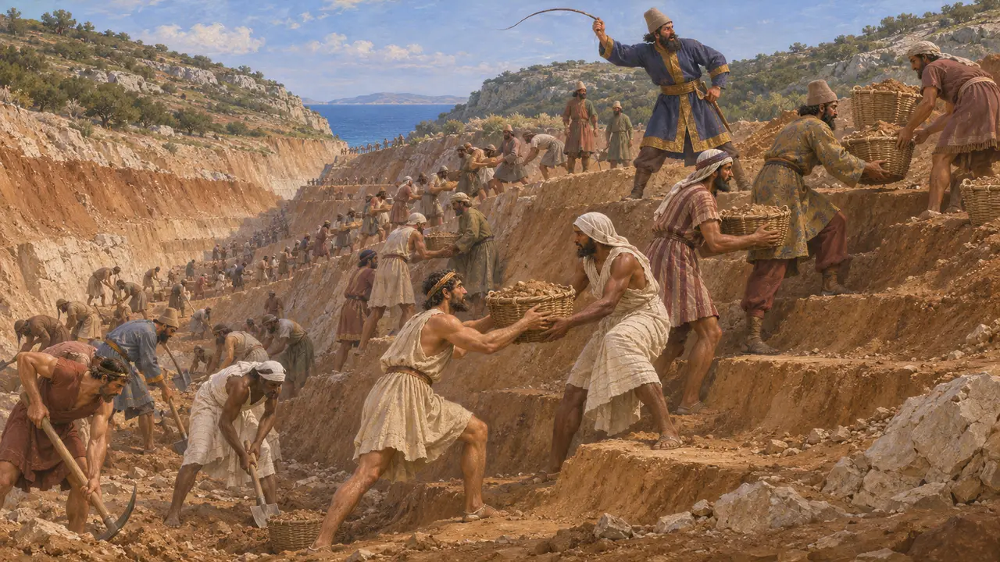

Leva de trabajo
Derechos reales sobre el trabajo de los obreros en el Imperio aqueménida, hacia 520-479 a. e. c.
Los reyes persas levantaron palacios, caminos y canales con el trabajo de miles de obreros procedentes de todo el imperio. Algunos prestaban servicio como obligación vinculada a la tierra, otros eran deportados o dependientes, y otros eran artesanos cualificados a quienes se pagaba por su trabajo. Las tablillas de arcilla de Persépolis muestran a estos trabajadores contados, agrupados y alimentados desde los almacenes reales, lo que los convierte en una de las fuerzas de trabajo mejor documentadas del mundo antiguo.
En el juego: Una orden permanente en la página de Impuestos del libro de cuentas: las obras reales avanzan más deprisa, pero los colonos llegan con menos facilidad. La nota del juego llama a los kurtaš trabajadores de leva; el término abarcaba trabajadores de condición diversa y aún debatida, no solo reclutas forzosos.

Los kurtaš en las tablillas de la Fortificación
En los documentosLas tablillas de la Fortificación de Persépolis, registros mayoritariamente elamitas de entre el 509 a. e. c. y el 493 a. e. c. aproximadamente, enumeran raciones de grano, vino y cerveza entregadas a grupos de trabajadores llamados kurtaš. Estos grupos incluían hombres, mujeres, niños y niñas, y a menudo se indicaba su origen: egipcios, jonios, licios, bactrianos, babilonios, skudrianos (probablemente tracios) y muchos más. Las mujeres que acababan de dar a luz recibían raciones adicionales, y las madres de varones recibían más que las madres de niñas.
R. T. Hallock, Persepolis Fortification Tablets, 1969

Artesanos traídos de todo el imperio
En los documentosLa carta fundacional de Darío en Susa enumera los pueblos que aportaron materiales y mano de obra para su palacio: jonios y sardianos tallaron la piedra, los babilonios moldearon los ladrillos, y medos y egipcios trabajaron el oro y decoraron los muros. Las tablillas del Tesoro de Persépolis, que comienzan en 492 a. e. c., registran que los trabajadores de las construcciones reales recibían parte de su paga en plata junto con sus raciones.
DSf; G. G. Cameron, Persepolis Treasury Tablets, 1948

Servicio debido por la tierra en Babilonia
En los documentosLos documentos babilonios muestran otra forma de trabajo al servicio del Rey. Los poseedores de tierras de arco, tierras de caballo y tierras de carro debían al Rey servicio militar o laboral a cambio de sus parcelas, y el archivo Murashu de Nippur muestra que, a finales del siglo V, esta obligación se saldaba a menudo en plata. Los archivos de los templos babilonios bajo Darío mencionan también hombres y suministros enviados a las obras reales de Elam.
M. Stolper, Entrepreneurs and Empire, 1985; P. Briant, From Cyrus to Alexander, 2002

Reclutados, dependientes o libres
En disputaLos historiadores aún discuten qué eran los kurtaš. Algunos los ven sobre todo como deportados y dependientes sujetos a las fincas reales. Otros ven un conjunto heterogéneo que incluía trabajadores reclutados que servían por un tiempo y especialistas cualificados que pasaban de un proyecto a otro. La palabra en sí solo significa trabajadores o personal doméstico, de modo que las tablillas por sí solas no aclaran el grado de libertad de cada grupo.
P. Briant, From Cyrus to Alexander, 2002

Cavando bajo el látigo en Athos
Relato antiguoHeródoto describe la excavación del canal de Jerjes a través de la península de Athos, hacia 483-480 a. e. c. Cuenta que hombres de las muchas naciones del ejército cavaban por turnos, empujados a latigazos, y se pasaban la tierra de mano en mano hasta lo alto. Según él, los fenicios trabajaron con más pericia, abriendo la zanja más ancha por arriba. Los historiadores señalan que su imagen del trabajo forzado encaja también con su tema más amplio del orgullo real.
Herodotus 7.22-23
Fuentes
- R. T. Hallock, Persepolis Fortification Tablets, 1969
- G. G. Cameron, Persepolis Treasury Tablets, 1948
- DSf
- P. Briant, From Cyrus to Alexander, 2002
- M. Stolper, Entrepreneurs and Empire, 1985
- Herodotus 7.22-23